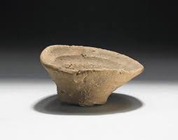
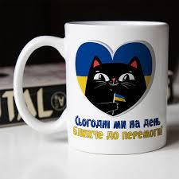
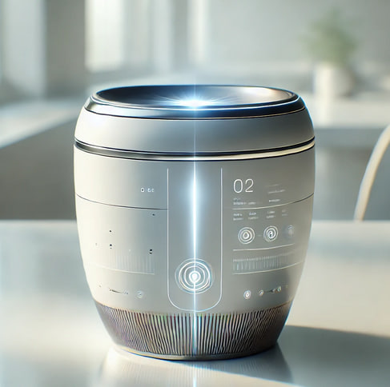

Різноманітність чашок крізь епохи
Від простих глиняних виробів до високотехнологічних гаджетів.



Порівняльна таблиця матеріалів
| Матеріал | Переваги | Епоха |
|---|---|---|
| Глина | Доступність, простота виготовлення | Стародавній світ |
| Порцеляна | Естетичність, зберігання тепла | Середньовіччя - Новий час |
| Скло | Хімічна інертність, прозорість | Новий час - Сучасність |
| "Розумний" пластик | Легкість, додаткові функції | Майбутнє |
Класифікація чашок
За призначенням:
- Чайні
- Кавові (еспресо, американо, лате)
- Бульйонні
- Дитячі
Основні етапи еволюції:
- Первісні ємності з дерева та каменю
- Винайдення гончарства та глиняні вироби
- Відкриття порцеляни в Китаї
- Промислова революція та масове виробництво
- Сучасні дизайнерські та технологічні рішення